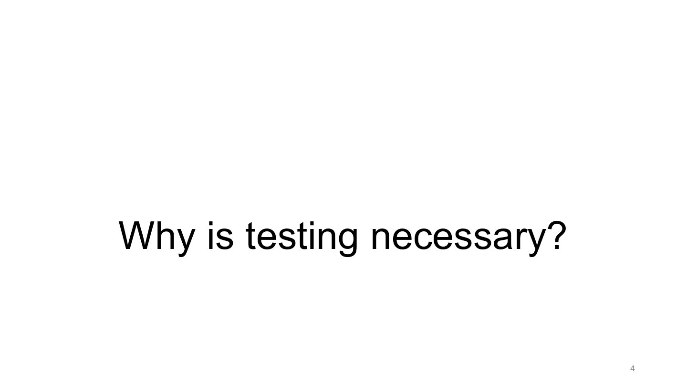
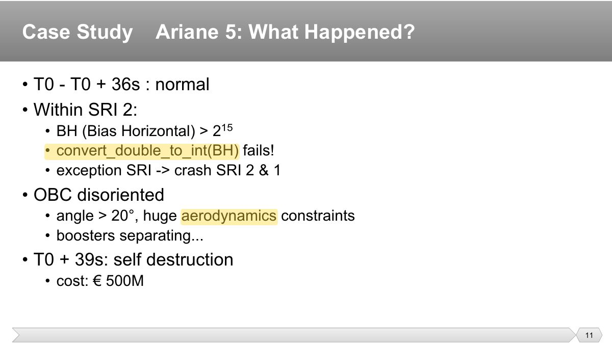
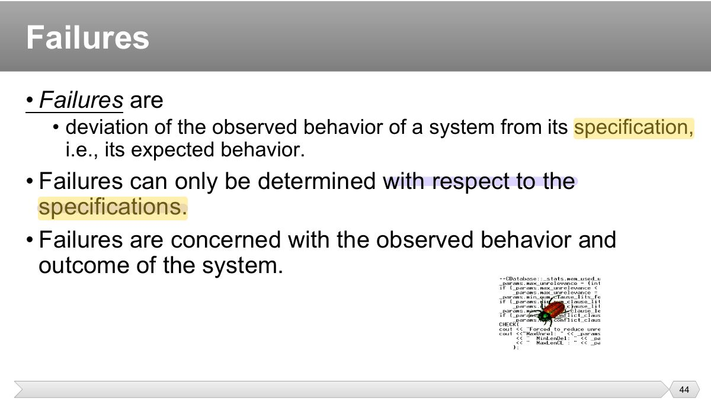
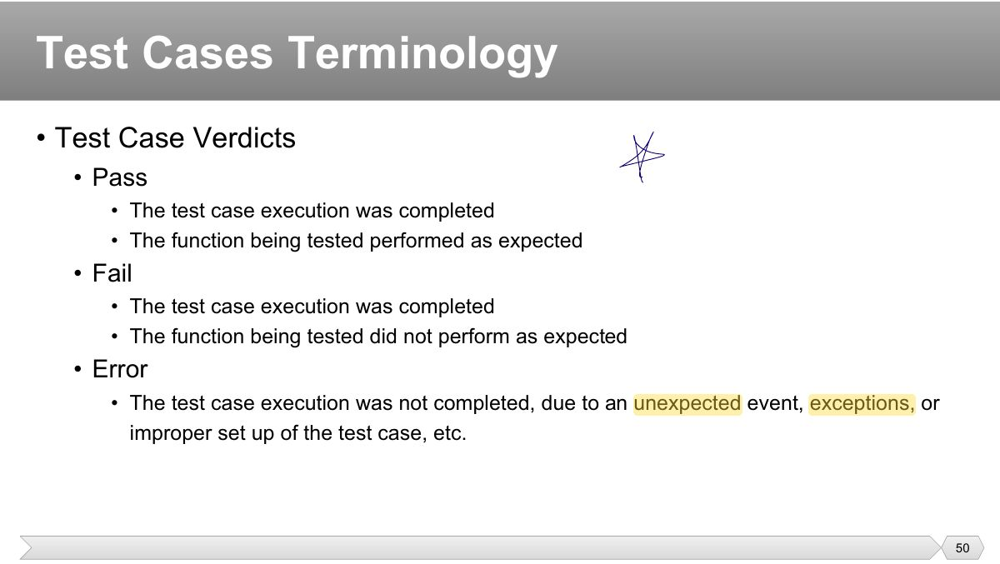
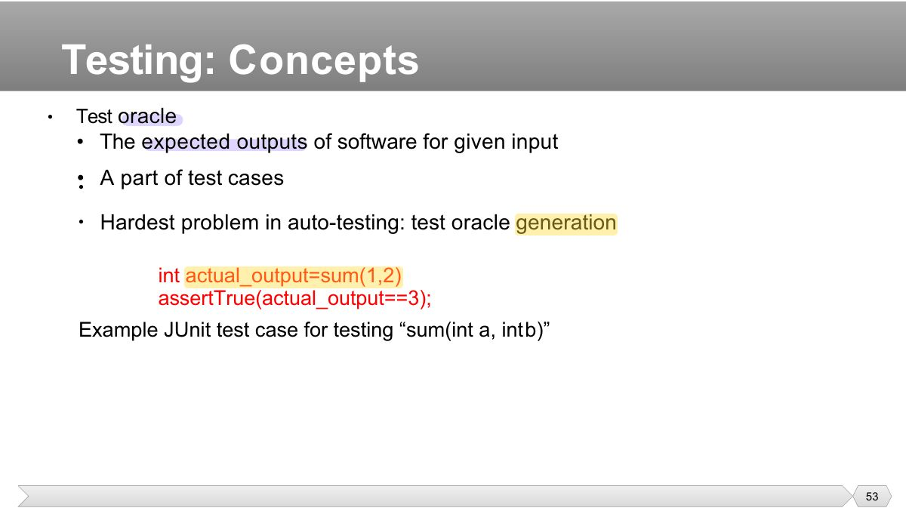

A programmer types < instead of <=. The wrong operator in the code is a:
- The typing mistake is the error; the result in the code is the defect.
Why testing is necessary (famous failures, the cost of poor quality), errors vs. defects vs. failures, what testing is and its objectives, test concepts (test case, oracle, scaffolding, fixture, suite, adequacy), the seven testing principles, the fundamental test process, the psychology of testing and independence, and the limits of testing.
Every original slide is shown unchanged. Yellow marks on a slide point to a numbered note: hover or tap a mark to jump to its note, and hover a note to see its marks. Questions tagged Past exam appeared on a real paper; Prediction questions are likely angles, not confirmed. Pick an answer to each question: a wrong pick tells you why it is wrong, so you can try again.

Testing reduces the risk of failures in operation (Ariane 5, Therac-25, failed satellites, bank errors): poor quality is very expensive.

Ariane 5 (1996): reused Ariane 4 code overflowed converting a 64-bit float to a 16-bit integer: not a coding slip, an untested assumption.

A human makes an ERROR (mistake) → it leaves a DEFECT (fault, bug) in the code → running it may cause a FAILURE (wrong observable behaviour).
Tip A human makes an ERROR (mistake) → it leaves a DEFECT (fault, bug) in the code → running it may cause a FAILURE (wrong observable behaviour).
A programmer types < instead of <=. The wrong operator in the code is a:
Every defect causes a failure.

Verdicts: pass, fail, inconclusive.

Test oracle: the mechanism that decides whether an output is correct (expected results, a reference implementation, assertions).
The source that tells you the expected result of a test is the:
Fixture: the fixed state the tests run against. Suite: a collection of test cases. Scaffolding: drivers, stubs, harnesses.
Seven principles: testing shows presence of defects (not absence) · exhaustive testing is impossible · early testing · defect clustering · pesticide paradox · testing is context dependent · absence-of-errors fallacy.
Tip Seven principles: testing shows presence of defects (not absence) · exhaustive testing is impossible · early testing · defect clustering · pesticide paradox · testing is context dependent · absence-of-errors fallacy.
Testing can show defects are present, never that they are absent.
Exhaustive testing is impossible except in trivial cases: use risk and priorities.
Defect clustering: a small number of modules contain most of the defects (Pareto).
Pesticide paradox: repeating the same tests finds no new bugs: review and add tests regularly.
Running the same tests over and over stops finding new defects. This is the:
Absence-of-errors fallacy: a bug-free system that doesn’t meet users’ needs is still a failure.
Fundamental test process: planning and control → analysis and design → implementation and execution → evaluating exit criteria and reporting → test closure.
Psychology: testers need curiosity, professional pessimism, attention to detail, good communication; report defects objectively.
Independence levels: the author tests their own code → another developer → an independent test team → outside organization. More independence finds different defects.
"Program testing can be used to show the presence of bugs, but never to show their absence." (Dijkstra)